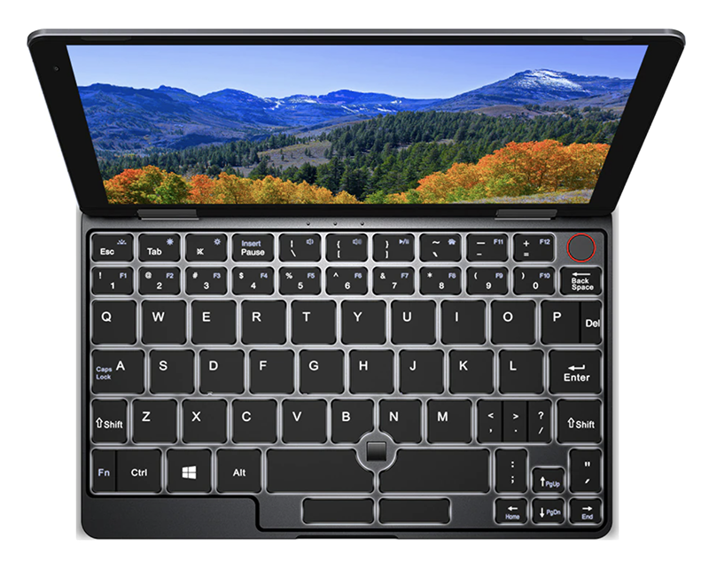
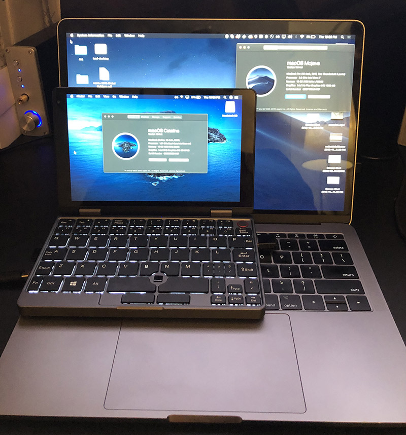

Writing a macOS touchscreen driver
The hunt for the tiniest laptop

I got excited about tiny laptops. I don't mean netbooks, I mean damn near palmtop laptops, the kind that would just barely fit in an oversized pocket... Something so small it seems impractical. Why? Beyond the needing a field laptop to tune and update FPV drones, I felt like having a tiny computer would make using it more fun. Everything from coding to web browsing, I imagined, would be more entertaining.
I found the Chuwi Minibook, an 8" touchscreen "yogabook" that runs Windows 10, and it seemed to fit the bill -- decent design, both USB-C and USB-A, a card reader, a fast CPU, and of course, a multi-touch touchscreen...
But there's was a caveat: I run macOS. I rely heavily on the ecosystem, from notes, to iMessage, to the UNIX subsystem, to the elegant user interface, it's everything I need in an operating system. Running Windows or Linux was simply not an option, and the smallest thing Apple makes is nowhere near small enough.
So can it run macOS?
Hackintoshing is hard
It just so happened that THEDEVIOUS1 had worked some wicked voodoo magic and managed to get Catalina running on the Minibook!
I was stoked! They had somehow got almost everything working, everything except the card reader, fingerprint scanner, internal storage, the accelerometer, and of course the touchscreen -- but who needs those? The dream seemed within reach; could this be the pocket-sized MacBook I've been daydreaming about?
But what about the touchscreen?

Fast-forward to having a hackintosh'd Minibook, booting Catalina... Naturally I want to try the touchscreen, but how?
It turns out there's a Linux driver for the Goodix touchscreen, and of course there's VoodooI2C, which takes I2C devices and makes them work with macOS.
Could I port the Linux driver to macOS, and somehow enable multi-touch gestures, scrolling, and right clicking? What would it take?
Spoiler alert: the answer is a weekend and a lot of coffee.
Hello touchscreen
As I was unfamiliar with VoodooI2C, I started by cloning an existing driver, VoodooI2CAtmelMXT. This gave me some boilerplate I could try to work on top of. I then stripped the code down to the basics -- methods like start, stop, probe, init as stubs with nothing more than error handling, just so I had the basic structure in place.
The next step was to try to get communication with the touchscreen working. I modeled a method, goodix_read_reg, after the method in the Linux driver, but there was a hurdle -- despite a correctly configured KEXT that should match on the GDX1001 device ID, the touchscreen didn't seem to power on and indicate it was ready for communication, so I couldn't test my method yet.
Waking up a sleepy touchscreen
According to the datasheet for the GT911 touchscreen, a reset sequence needs to be sent over I2C. We weren't doing this yet, which explained why the touchscreen didn't respond to command.
But I had a hunch -- if the touchscreen works in Windows, which would have to send this reset sequence to wake the touchscreen up, perhaps I could warm reboot from Windows, and the touchscreen would stay on? I tried it, and it worked -- after rebooting, it was clear the touchscreen was awake and listening, but all of my attempts to communicate with it were failing. I was getting junk data back and transaction errors:
(VoodooI2CGoodix) VoodooI2CGoodixTouchDriver::Starting
(VoodooI2CGoodix) VoodooI2CGoodixTouchDriver::Reading version...
VoodooI2CControllerDriver::pci8086,9d62 I2C Transaction error details
VoodooI2CControllerDriver::pci8086,9d62 lost arbitration
VoodooI2CControllerDriver::pci8086,9d62 I2C Transaction error: 0x07001000 - aborting
(VoodooI2CGoodix) VoodooI2CGoodixTouchDriver::Read version failed: -536870212
(VoodooI2CGoodix) VoodooI2CGoodixTouchDriver::Failed to init device
(VoodooI2CGoodix) VoodooI2CGoodixTouchDriver::Freeing
Meanwhile, back at the secret mountain lab from which THEDEVIOUS1 probably works from, he'd figured out how to modify the custom DSDT to send the reset sequence on initialization. We chatted on Gitter and worked out the pin addresses by consulting the datasheet and throwing a lot of trial an error at the problem. After some fiddling, we were able to get it to work from a cold boot, no Windows required! There were plenty of issues not worth getting into because they're beyond my understanding, but it involved setting up the pins correctly and coding the reset sequence into the _PS0 method. Finally, I could go back to C code land where I was more comfortable and try to make some more progress.
Endianness is important
It seems the touchscreen and I weren't speaking the same language...
Puzzled, I continued to read the specifications for the touchscreen driver, and I realized the touchscreen expects the register address in big endian, and the CPU, of course, is little endian! I used the OSSwapHostToBigInt16 method to swap the register address to big endian, and to my surprise, I got data back from the touchscreen!
VoodooI2CGoodixTouchDriver::Probing
VoodooI2CGoodixTouchDriver::Starting
VoodooI2CGoodixTouchDriver::Reading version...
VoodooI2CGoodixTouchDriver::ID 9111, version: 2020
VoodooI2CGoodixTouchDriver::Device initialized
This was the breakthrough I needed! I had a working kernel extension that matched on the ID, I was able to communicate over I2C (albeit, only a basic "hello touchscreen"), and now I just needed to... actually implement the entire driver.
Conversations with a touchscreen
After shoehorning some code from the Linux driver in, I was able to read back configuration data from the touchscreen:
VoodooI2CGoodixTouchDriver::Config read successfully
VoodooI2CGoodixTouchDriver::ts->abs_x_max = 1920
VoodooI2CGoodixTouchDriver::ts->abs_y_max = 1080
VoodooI2CGoodixTouchDriver::ts->int_trigger_type = 1
VoodooI2CGoodixTouchDriver::ts->max_touch_num = 10
Using the Atmel driver's technique for responding to interrupts, I was able to get some information back from the touchscreen, but the coordinates were wrong.
It seems I once again forgot about endianness, but this time when writing data to the touchscreen. After correcting that, I got actual, correct data out of the touchscreen:
VoodooI2CGoodixTouchDriver::Touch 0 at 1889, 19 with width 80
Armed with real data, it was time to do something useful with it.
Now let's make it actually do something
The next step was to take this data and turn it into interaction events. macOS exposes methods that let you set up multitouch interfaces, publish events to them, and, in turn, actually control the cursor and interactions in the OS.
Being completely new to this, I started simple and just made the touchscreen act like a gigantic trackpad. This involves using a VoodooI2CDigitiserTransducer and updating coordinates as I get them.
Because the MiniBook can be flipped into a tablet mode, the touchscreen could be configured to be rotated or flipped, so I had to add some basic support for dealing with those values, which was fun because casting, floating point math, and applying inversions and axis swaps in the right order. Most of this was literally poking at the screen and looking at output, as we often do with any code.
The next step was to refactor the code to use an EventDriver and move the code out of actual TouchDriver into the EventDriver. This decoupled the code that reports touch events, sets up and tears down multitouch interfaces, and handles sleep/wake events from the code that communicates with the touch screen. This separation of concerns makes it easier to reason about operations that are going on at the hardware and OS-level. Along the way, I created a Touch struct to store information about the current touches, and used this to pass information from the TouchDriver to the EventDriver for reporting.
Finally, with the correct structure in place and some help from alexandred from VoodooI2C, and some fooling around with fixes for crashes on unload and properly releasing the event driver, I was able to implement support for a touchscreen that moved the mouse to follow your finger! Except it was clicking the entire time...
The problem was that it was unclear when a touch finally ended. Given that touches come from an interrupt that triggers continuously while the user's fingers are contacting the display, I couldn't just assume the finger was lifted after an interrupt was complete. In order to get proper dragging and tapping, I had to assume the finger was down until an amount of time had elapsed, at which point I could dispatch an event that tells the OS the finger has been lifted. This was implemented using an IOTimerEventSource.
Fine-tuning touch behaviors
With basic touchscreen interactions implemented, there were still some behaviors that needed fine-tuning. Right click and tapping are non-trivial interactions that we take for granted, and a complicated system of timers was necessary to determine whether an interaction was a tap, or a tap and hold to indicate a right click.
And then there were bugs
Putting together a driver like this using APIs I'd never seen meant tons of opportunities to do things wrong. Luckily, I had help from THEDEVIOUS1, balopez83, hatran0884, and kostaskas to test and find the bugs.
Occasional kernel panics and hangs on shutdown, phantom touches, timing issues that result in reading data from the touchscreen when it's asleep, proper handling of portrait mode, and of course, that bug where it used 100% of the CPU due to spurious interrupts.
Stylus support
So we've got a touchscreen, but what about a stylus? The Minibook supports Chuwi's HiPen H3 active stylus, so naturally I had to acquire one and test it.
Curiously, the stylus worked, but would click the screen even before you touched it to the display. A little logging revealed that the touchscreen reported a touch with a width of 0 when the stylus was hovering. Armed with this knowledge, I was able to make the stylus move the mouse around.
Some additional reading of the datasheet revealed how the stylus reported button clicks, and with a little work, I was able to get clicking and right clicking working on the stylus. I then refactored the stylus to use a separate transducer to avoid confusion with touch events and called it done!
Demo
Learnings
This project took me completely out of my comfort zone and had me bridging the gap between hardware and software, all the way to the OS-level. I had to consider things like endianness, deal with interrupts and work around quirky hardware that required a little convincing to function right, and work with macOS APIs that weren't quite documented that well.
The biggest thing, however, was not working in a vacuum. Using Github and Gitter, I was able to communicate with people across the world to help test, give feedback, fix issues, and suggest approaches to problems. Without this kind of instant, global pair programming and collaboration, I'd probably still be scratching my head.
The process of creating open source software is often thankless, painful, and confusing but, despite all that, beautiful. The way the internet can connect strangers from across the globe is magical, even if we often lose sight of it amid a sea of scams and misinformation. Look for the good in the world, find something fun to hack, and have fun solving problems with internet friends who you'll never meet and will only ever know by their GitHub username.